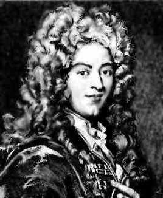
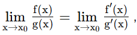

Guillaume De l'Hôpital

1661, Paris - 1704, Paris
Guillaume De L'Hôpital (auch: de l'Hospital) diente als Kavallerieoffizier, dankte aber wegen seiner Kurzsichtigkeit ab. Von dieser Zeit an beschäftigte er sich hauptsächlich mit Mathematik. In den Jahren 1691 und 1692 war Johann Bernoulli sein Lehrmeister in Infinitesimalrechnung.
L'Hôpital war ein sehr kompetenter Mathematiker. Er löste auch das Brachystochrone-Problem. Damit war er in bester Gesellschaft mit Newton, Leibniz und Jacob Bernoulli, die dieses Problem unabhängig voneinander gelöst hatten.
L'Hôpital's Berühmtheit gründet auf seinem Buch Analyse des infiniment petits pour l'intelligence des lignes courbes (1696), das erste Buch über Infinitesimalrechnung. In der Einführung verdankt de L'Hôpital seine Kenntnisse von Leibniz, Jacob Bernoulli and Johann Bernoulli. Er betrachtete aber die angegebenen Grundlagen als seine eigene Ideen.

falls f(x0) = g(x0) = 0©1997 - 2026 www.mathematik.ch |🔍